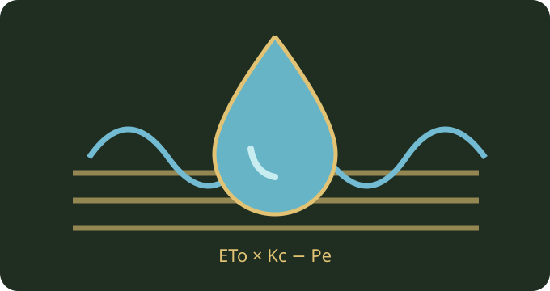

محاسبهگر نیاز آبی و حجم آبیاری
برآورد شفاف نیاز خالص و ناخالص آبیاری با ETo، ضریب گیاهی، بارش مؤثر و راندمان سامانه.
محاسبه در مرورگر انجام میشود و دادهها به سرور ارسال نمیشوند.

محاسبه آنلاین
فرمول: ETc = ETo × Kc؛ نیاز خالص = بیشینه(۰، ETc − بارش مؤثر)؛ نیاز ناخالص = نیاز خالص ÷ راندمان؛ حجم = میلیمتر × هکتار × ۱۰. برای برنج غرقابی، آبشویی، تغییر ذخیره رطوبت و تلفات ویژه مدل کافی نیست.
۵۰ راهنمای کوتاه و کاربردی مرتبط
هر عنوان را باز کنید تا نکته عملی و محدودیت تفسیر آن را بخوانید. این راهنماها جایگزین آزمون مزرعه و نظر متخصص نیستند.
آبیاری
01 تعیین بازه داده هواشناسی
تبخیرتعرق مرجع را برای همان بازهای وارد کنید که میخواهید آب را محاسبه کنید. ترکیب مقدار روزانه با بارش ماهانه بدون تبدیل زمانی نتیجه را منحرف میکند.
02 منبع معتبر ETo
برای ETo از ایستگاه هواشناسی محلی یا محاسبه معتبر استفاده کنید. دمای هوا بهتنهایی جایگزین ETo نیست زیرا باد، رطوبت و تابش نیز اثر دارند.
03 انتخاب ضریب گیاهی
ضریب Kc را با گونه، مرحله رشد و اقلیم سازگار کنید. استفاده از یک Kc ثابت در کل فصل تنها یک تقریب است.
04 تفاوت ET0 و ETc
ETo تبخیرتعرق مرجع و ETc نیاز تبخیرتعرق محصول در شرایط تعریفشده است. در روش ضریب گیاهی ETc از حاصلضرب ETo در Kc به دست میآید.
05 باران مؤثر نه کل باران
بارش مؤثر فقط سهمی از بارش است که واقعاً در ناحیه ریشه قابل استفاده میماند. رواناب و نفوذ عمقی میتوانند این سهم را کاهش دهند.
06 واحد میلیمتر
یک میلیمتر آب روی هر مترمربع معادل یک لیتر است. برای تبدیل عمق آبیاری به حجم باید مساحت واقعی آبیاریشده مشخص باشد.
07 تبدیل هکتار به مترمکعب
یک میلیمتر آب روی یک هکتار برابر ده مترمکعب است. ابزار با همین رابطه عمق ناخالص را به حجم تبدیل میکند.
08 برآورد روزانه
خروجی روزانه بر پایه ورودیهای میانگین همان روز است. تغییر ناگهانی دما یا بارش نیازمند محاسبه دوباره است.
09 برآورد چندروزه
برای دورههای چندروزه با شرایط نسبتاً ثابت میتوان مقدار روزانه را در تعداد روز ضرب کرد. اگر هوا یا Kc تغییر کند، روزها را جداگانه محاسبه و جمع کنید.
10 تفاوت نیاز خالص و ناخالص
نیاز خالص مقدار موردنیاز در ناحیه ریشه است و نیاز ناخالص تلفات سامانه را هم لحاظ میکند. راندمان کمتر به حجم برداشت بیشتری منجر میشود.
11 اندازهگیری راندمان واقعی
راندمان را از ارزیابی میدانی سامانه و داده معتبر انتخاب کنید. عددی که صرفاً از نوع سامانه حدس زده شود برای بودجهریزی قطعی مناسب نیست.
12 گرفتگی قطرهچکان
گرفتگی باعث کاهش و ناهمگونی دبی میشود. پیش از تصمیم به افزایش حجم آب، فیلترها و قطرهچکانها را بازدید کنید.
13 فشار شبکه
فشار غیرمناسب ممکن است توزیع آب را نابرابر کند. فشار در ابتدا و انتهای خطوط را مطابق دستور سازنده اندازهگیری کنید.
14 یکنواختی پخش
حتی با حجم کل درست، توزیع نامساوی میتواند بخشی از مزرعه را کمآب بگذارد. آزمون یکنواختی سامانه را در برنامه نگهداری قرار دهید.
15 نشتی و شکستگی
نشتی حجم آب برداشتشده را بالا میبرد بیآنکه الزاماً به ریشه برسد. قرائت کنتور و بازدید مسیر انتقال را با هم مقایسه کنید.
16 آبیاری قطرهای
در سامانه قطرهای زمان کارکرد را با دبی واقعی قطرهچکانها و تعداد آنها محاسبه کنید. خروجی این ابزار حجم است نه زمان روشن بودن پمپ.
17 آبیاری بارانی
باد و الگوی پاشش بر یکنواختی آب اثر دارند. در باد شدید از تفسیر حجم محاسبهشده بهعنوان توزیع یکنواخت خودداری کنید.
18 آبیاری سطحی
شیب، طول جوی و نفوذپذیری خاک بر تلفات اثر میگذارند. راندمان واقعی باید در مزرعه سنجیده شود.
19 آبیاری گلخانهای
سطح کشت مؤثر و تبخیرتعرق در شرایط گلخانه ممکن است با فضای باز فرق کند. دادههای فضای باز را بدون اصلاح وارد نکنید.
20 آبیاری باغ
سایهانداز درخت و پوشش سطح زمین در تفسیر Kc مهماند. برای باغ جوان و بالغ الزاماً از یک ضریب استفاده نکنید.
خاک
21 بافت شنی
خاک شنی معمولاً ذخیره آب قابل استفاده کمتری از خاک ریزبافت دارد. برنامه نوبتدهی را بر اساس ظرفیت واقعی خاک تنظیم کنید.
22 بافت رسی
خاک رسی ممکن است نفوذ اولیه کندتری داشته باشد. از تجمع آب سطحی و کاهش تهویه ریشه پیشگیری کنید.
23 عمق مؤثر ریشه
عمق ریشه تعیین میکند چه مقدار آب خاک در دسترس گیاه است. نیاز روزانه محاسبهشده بهتنهایی فاصله آبیاری را تعیین نمیکند.
24 ظرفیت زراعی
ظرفیت زراعی شاخص وضعیت رطوبت خاک پس از زهکشی ثقلی است. آن را با آب کاملاً قابل برداشت گیاه یکی ندانید.
25 نقطه پژمردگی
آب موجود نزدیک نقطه پژمردگی برای گیاه بهسختی قابل استفاده است. برنامه آبیاری باید از تنش طولانیمدت جلوگیری کند.
26 سنجش رطوبت خاک
تنسیومتر یا حسگر مناسب میتواند تصمیم محاسباتی را با وضعیت واقعی ریشه تطبیق دهد. حسگر را در عمق و محل نماینده نصب کنید.
27 شوری آب آبیاری
شوری بالا ممکن است نیاز به مدیریت آبشویی و زهکشی داشته باشد. فرمول ساده ETc نیاز آبشویی نمک را محاسبه نمیکند.
28 شوری خاک
افزایش هدایت الکتریکی خاک میتواند رشد را محدود کند. برای اصلاح، آزمایش خاک و بررسی زهکشی لازم است.
29 زهکشی مزرعه
آبیاری بیش از ظرفیت زهکشی خطر غرقاب را افزایش میدهد. قبل از افزایش حجم آب، مسیر خروج و سطح ایستابی را بررسی کنید.
30 رواناب سطحی
رواناب بخشی از آب را از دسترس ریشه خارج میکند. مدیریت شیب، پوشش و شدت کاربرد آب میتواند به کاهش آن کمک کند.
مدیریت
31 کالیبراسیون کنتور
حجم محاسبهشده را با کنتور کالیبرهشده کنترل کنید. اختلاف زیاد میتواند ناشی از نشتی، خطای دبی یا ورودی نامناسب باشد.
32 ثبت هر نوبت آبیاری
تاریخ، عمق یا حجم، بارش و وضعیت خاک را ثبت کنید. دادههای ثبتشده به اصلاح راندمان و برنامه کمک میکنند.
33 تقسیم مزرعه به قطعه
اگر خاک یا محصول قطعهها متفاوت است برای هر قطعه محاسبه جداگانه انجام دهید. میانگین کل مزرعه ممکن است نیاز قطعات را پنهان کند.
34 بارندگی پیشبینیشده
پیشبینی بارش قطعیت ندارد. تصمیم عملی را با مشاهده بارش واقعی و ظرفیت خاک بهروزرسانی کنید.
35 مرحله سبزشدن
ریشه کمعمق در ابتدای رشد میتواند حساسیت بیشتری به خشکشدن سطح خاک داشته باشد. محاسبه حجم روزانه جایگزین بررسی بستر بذر نیست.
36 مرحله گلدهی
در بعضی محصولات تنش آبی در مراحل زایشی حساستر است. ضریب گیاهی و آستانه تنش را از راهنمای همان محصول انتخاب کنید.
37 مرحله رسیدگی
در انتهای فصل ممکن است Kc و هدف آبیاری تغییر کند. زمان قطع آب را صرفاً از این محاسبه استخراج نکنید.
38 محدودیت سهمیه آب
اگر سهمیه کمتر از نیاز برآوردی است، کسری را ثبت و اولویتبندی کنید. کمآبیاری برنامهریزیشده نیازمند تحلیل اقتصادی و زراعی جداگانه است.
39 پایش انرژی پمپ
حجم آب تنها یکی از عوامل هزینه پمپاژ است. ارتفاع پمپاژ، راندمان پمپ و تعرفه انرژی را جداگانه بررسی کنید.
40 تعیین دبی لازم
برای تبدیل حجم به دبی، حجم مترمکعب را بر ساعت کارکرد تقسیم کنید. این ابزار ساعت کارکرد را بهعنوان ورودی نمیگیرد.
کنترل
41 ورودی صفر بارش
بارش مؤثر صفر در دوره بدون بارندگی قابل استفاده است. اما آب ذخیرهشده قبلی در خاک هنوز میتواند در برنامه آبیاری اثر داشته باشد.
42 بارش بیش از ETc
اگر بارش مؤثر از ETc بیشتر باشد نیاز خالص همان دوره صفر نمایش داده میشود. این به معنی نبود خطر زهکشی یا رواناب نیست.
43 راندمان صددرصد
راندمان صددرصد حالت ایدهآل و معمولاً غیرواقعی است. برای طراحی واقعی از مقدار اندازهگیریشده استفاده کنید.
44 خطای واحد مساحت
مساحت را به هکتار وارد کنید نه مترمربع. برای تبدیل مترمربع به هکتار عدد را بر دههزار تقسیم کنید.
45 ورودیهای منفی
بارش، مساحت و ETo منفی از نظر این مدل پذیرفته نیستند. در صورت خطای ورود داده، مقدار را تصحیح کنید.
46 محدودیت مدل
محاسبه حاضر تغییر ذخیره آب خاک، رواناب اضافی، آبشویی و بالاآمدن موئینه را صریحاً مدل نمیکند. برای طراحی نهایی سامانه به ارزیابی میدانی نیاز است.
47 آزمون حساسیت Kc
محاسبه را با Kc پایین و بالا در بازه معتبر همان مرحله تکرار کنید. اختلاف خروجی دامنه عدم قطعیت ناشی از ضریب را نشان میدهد.
48 آزمون حساسیت راندمان
با دو راندمان واقعبینانه حجم ناخالص را مقایسه کنید. این مقایسه میتواند ارزش تعمیر و بهبود سامانه را نشان دهد.
49 کنترل جمع دوره
برای دورههای ناهمگون، حجم هر روز را جداگانه حساب و جمع کنید. ضرب یک روز نمونه در کل فصل فقط تقریب اولیه است.
50 تفسیر خروجی
عدد ابزار برآورد برنامهریزی است نه دستور قطعی بازکردن شیر آب. رطوبت خاک، بارش واقعی و نظر متخصص محلی را لحاظ کنید.
منابع روش محاسبه
FAO: Irrigation Water Needs — تعریف نیاز خالص و بارش مؤثر.
FAO-56: Crop Evapotranspiration — روش ETo و Kc.
این ابزار راهنمای برنامهریزی اولیه است؛ نتیجه تضمین عملکرد، توصیه قطعی کشاورزی یا تأییدیه علمی مستقل نیست.